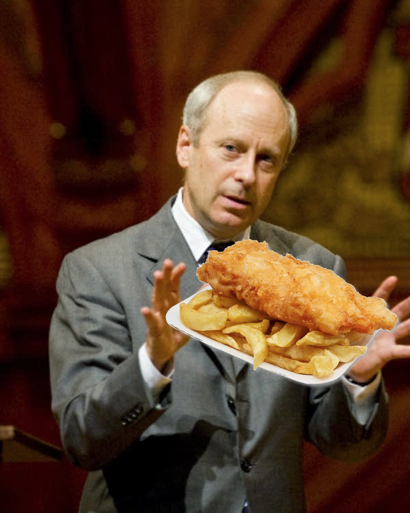

Published March 19, 2026

Two weeks ago, I was offered the words fish and chips at my philosophy residency outside Reference Point, and in return the kind fella bought me something from the fish and chip shop.
The philosopher Michael Sandel once said "you can't go wrong with fish and chips" but didn't elaborate any further on that. So I'll have a stab of my own at asking what a philosopher might think about the beloved national dish.
To answer this, I'll start at the beginning. Anaximander (c. 610–546 BC) was a pioneering Milesian philosopher, often called the 'Father of Cosmology,' who challened the original flat-Earther Thales with his theory that the Earth has a cylindrical shape. If he were to eat fish and chips, Anaximander would likely have felt face-to-face with our human origins. This is because he had speculated that human beings emerged from aquatic life, predating evolutionary theories by centuries. So while fish and chips are comfort food for many today, to Anaximander the dish is a reminder of our specific biological contingency. And in this lies something almost unsettling. The eater and the eaten are not wholly separate categories, but stages in a long natural history.
That thought didn't phase me much while tucking in with my wooden fork, but the taste of the dish in my home city of London made me appreciate the differences in taste in those I'd eaten while on tour recently with my band in places like Glasgow and Dublin. Yet crucially, wherever you go it's still recognisably fish and chips. This resembles what Plato called participation in a form: the ideal fish and chips exists nowhere perfectly, but each portion approximates it.
Of course, we do not think about fish and chips while eating it. It disappears into the background and belongs to what Heidegger called the ready-to-hand. The meaning of the object arises from its use within everyday life.
But maybe Sandel is wrong. Perhaps you can go wrong with fish and chips. In his book Animal Liberation, the philosopher Peter Singer argues that the capacity to suffer – what he calls 'sentience' – is what grounds moral consideration. Animals suffer and this grounds why many refuse to eat them, but do fishes? Many people base their pescatarian diet on a belief that fishes don't feel pain. This idea had its roots in the view associated with René Descartes, that animals are more like automata than creatures with an inner life. But even though the mechanistic account of animals has been widely rejected, this view persists into the current day with regards to fishes. One notable 2015 study was entitled 'Fish do not feel pain and its implication for understanding phenomenal consciousness' and argued that fish lack a cerebral cortex and therefore "cannot experience pain or fear".
But there have been several important challenges to that mechanistic Cartesian account by philosophers and scientists in recent years. The most convincing evidence that fishes feel pain, even without a cerebral cortex, was discovered in 2002 by Dr Lynne Sneddon and her colleagues Victoria Braithwaite and Michael Gentle. They were the first to discover that fishes had 'nociceptors', which are pain receptors that give them the ability to feel physical pain, and the potential to feel emotional pain.
There are other theories of animal ethics that don't invoke sentience. Tom Regan has put forward a rights-based approach which argues that animals who are “subjects-of-a-life” have inherent value, and therefore rights which are not to be treated merely as resources. While his original focus was on mammals, some philosophers working in his tradition have extended the argument to fishes, especially as evidence of fish cognition and perception has grown. If fishes qualify even minimally as subjects of experience, then their use in food production becomes morally problematic, not just regrettable.
An another approach comes from Martha Nussbaum with her 'capabilities approach.' Nussbaum argues that justice requires allowing creatures to flourish according to their species-specific capacities. Fishes, on this view, are not just pain-receptors but beings with their own forms of life—navigation, social behavior, responsiveness to environments. Catching and killing them for food interrupts a form of flourishing that has intrinsic value. The issue isn’t just pain, but the truncation of a life.
Even if we can't say conclusively from the available evidence, a philosopher called Jonathan Birch has been central in arguing for a precautionary principle about sentience. His work (including contributions to policy discussions like the UK's Animal Welfare (Sentience) Act) suggests that where there is credible evidence that a class of creature might be sentient, we should treat them as if they are because the moral cost of being wrong is high.
But there may also be entirely different ethical insights to be found in the dish. Its historical rise alongside industrial Britain is after all a utilitarian triumph: inexpensive, filling, and can feed a large population, fish and chips maximises utility. However, the moral arithmetic of maximising pleasure by lowering the culinary standard to offer it to a greater number of people may run into what Parfit called 'the repugnant conclusion'.
Finally, fish and chips carries the weight of memory. As Marcel Proust famously showed with his madeleine, food can collapse time. A bite of crisp batter may summon childhood seaside trips, newspaper cones of chips, or the smell of frying oil drifting down a cobbled street. The meal becomes a portal through which personal history returns.
So there you have it: even the most ordinary of food like battered fillet and soggy chips raises questions beyond the ordinary.